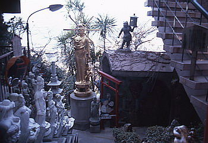
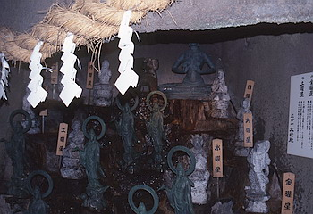
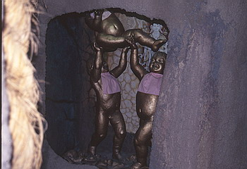
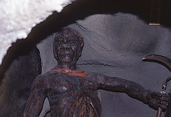
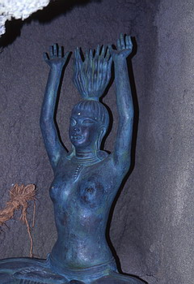
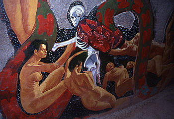
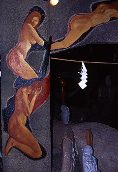
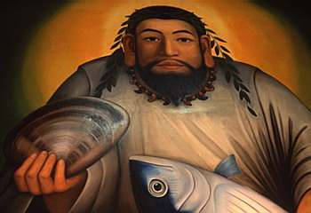
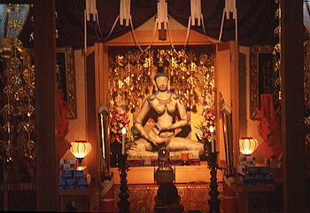
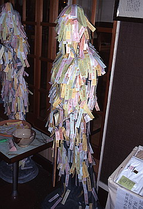

延命山大秘殿/愛知県蒲郡市
蒲郡の 三谷温泉。多くの旅館が立ち並ぶこの温泉街の客がここを訪れることはあまりない。ここは日本一の秘仏寺（パンフより）、延命山大秘殿。エロとグロの世界が延々と渦巻く大洞窟が御自慢の変わった寺だ。
「大秘殿」の看板が掲げられたチープな外観はお寺というより場末の秘宝館といった趣。

洞窟巡りは見所たくさん。十六羅漢、三十三観音、十二支の護り本尊などなど。
 
しかしどれも比較的新しいものばかりでイマイチ迫力がない。
結局印象に残っているのは地獄ものとエッチものの2点。
北島サブちゃん似の鬼（か？）が迎えてくれる地獄阿房羅刹という所ではや生首や拷問シーンが恐ろしい。
 
そしてエッチものは三十日秘仏とよばれるゾーンで、エロ壁画（初期横尾忠則風）満載のそこにはエッチものの石像が多数。
 
他にも珍宝石や陰相石など、もう これでもかっ、てな位エロとグロの極みが300ｍの薄暗い洞窟内で展開されている。

洞窟を出るとこのお寺のもう一方の顔「日本一お料理の神様」（パンフより）がむかえてくれる。
お料理の神様磐鹿六雁命の総本山らしくデカイ壁画が奉安してある。 しかし本当に総本山かどうかは疑わしい。
 
さらに数々の神様仏様を拝観し、最後にチベットの秘仏、願かけ秘仏（エロ）にお参りすると長い長い大秘殿ツアーも終わり。
出口の喫茶ルームではゲップがでるほどのエログロの海を渡り切った御褒美に巨大な器にはいった抹茶がいただける。そこまでしてくんなくてもいいよ、お腹いっぱいだから。
結構金かけてある割には脱力係数の高いスポットでした。
1997.7.
追記；閉めちゃいました。2022.01.記
珍寺大道場 HOME